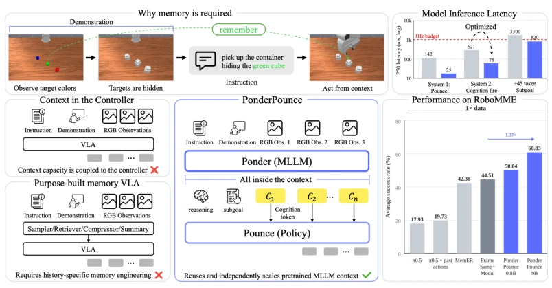
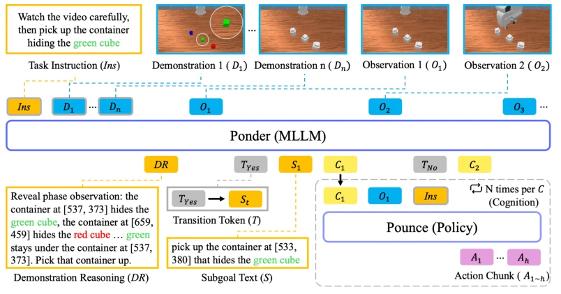
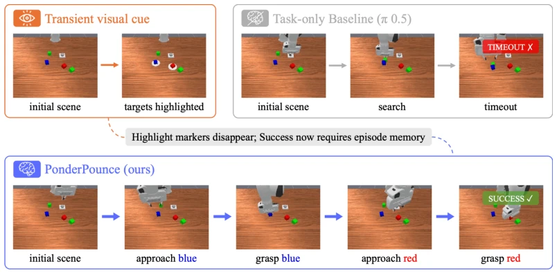
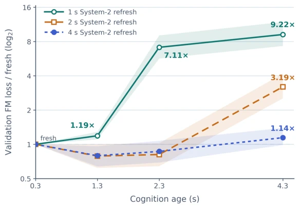

This paper forcibly integrates the MLLM's "context" into robot control as memory, effectively adding an "external brain" to the VLA model. System 2 is responsible for remembering, System 1 for acting; the decoupled design is quite clever, avoiding hard-stacking memory modules within the controller. It indeed beats FrameSamp+Modul on RoboMME, proving large model context can serve as a universal memory foundation. But the drawbacks are obvious: high scores in simulation, unknown in the real world; relies on simulator-generated subgoal annotations, degrades without annotations; although 9B model inference latency is optimized to 20Hz, the training cost is there. Most ironically, it claims not to use dedicated memory, yet still relies on annotation supervision to "teach" it to remember, does this count as another form of "artificial stupidity"? In short, the engineering approach is clear, but it still falls short of true general-purpose memory.
Robot manipulation often relies on information beyond current observations, such as occluded objects or early events. Existing VLA models typically inherit pretrained representations but do not use them as episode memory. Traditional methods like FrameSamp+Modul (Dai et al., 2026) route context through sampling, storage, or retrieval mechanisms, or like MemER (Sridhar et al., 2026) retrieve keyframes. These designs add dedicated memory modules, limiting scalability. This paper aims to solve: how to make accumulated episode context actionable for controllers? Existing work mostly processes context within the controller or in dedicated storage, while PONDERPOUNCE proposes reusing MLLM native causal context as a memory engine, decoupling cognition and control, avoiding redesigning memory architecture.
The overall architecture is divided into an asynchronous dual-system. PONDER (System 2) serves as the MLLM context engine, maintaining an append-only causal context, accumulating instructions, demonstrations, and observations. It predicts transition tokens and generates internal subgoal text, finally outputting cognition carrier states (Ct). POUNCE (System 1) is the VLA action model, receiving current observations, instructions, and the latest cognition token with its age encoding. The two are connected via a continuous cognition token interface, running on decoupled clocks. During training, end-to-end joint optimization is used, utilizing subgoal text and demonstration reasoning to supervise PONDER's LM head, but text does not enter POUNCE. Inference optimization adopts StaticCache and Fused Triton kernels to reduce latency. This design allows System 2 capacity to scale independently without changing the controller architecture. Specifically, POUNCE receives cognition and sine-encoded age, PONDER generates text at transitions, and only updates the carrier otherwise. The loss function includes action flow matching and LM head cross-entropy, gradients are scaled and backpropagated to PONDER.

Figure 1: Pretrained MLLM context as scalable robot memory. Unlike designs processing con- text within the controller or through purpose-built memory, PONDERPOUNCE retains history in PONDER’s context and asynchronously routes cognition to POUNCE. This separation keeps context processing off the action path and lets System 2 scale without changing the controller architecture.

Figure 2: PONDERPOUNCE architecture. PONDER accumulates the instruction Ins, demonstra- tions D1:n, and observations Ot. The transition token Tt gates optional internal text DR and St, while carrier states form cognition Ct. POUNCE reuses the newest cognition with the current obser- vation to predict A1:h.
Evaluated on RoboMME and RoboCasa-DC. RoboMME tests memory-dependent control (e.g., counting, persistence, reference, imitation), RoboCasa-DC tests demonstration-conditioned control. Baselines include π0.5, FrameSamp+Modul, SAM2Act+, etc. Main results: under 1x data PONDERPOUNCE reaches 60.83%, better than FrameSamp+Modul's 44.51%; under 9x data reaches 75.54%. Ablation shows removing cognition drops to 27.96%, on RoboCasa removing cognition drops to 8.6%. 9B context engine improves by 10.79pp over 0.8B, proving pretrained capacity is transferable. But latency optimization only supports 20Hz playback, and depends on simulator annotations. Advantages are obvious on Permanence and Reference tasks, but slightly inferior to FrameSamp on Imitation.

Figure 3: Qualitative RoboMME PickHighlight. The task is “Press the button, pick all cubes that were highlighted, then stop.” Pressing the button briefly marks the blue and red targets, after which the markers disappear. The current-observation π0.5 searches and times out, whereas PON- DERPOUNCE retains the observed cue in its episode context and grasps both targets to complete the task.

Figure 4: Measured staleness under slow-refresh training. The curves are checkpoints trained with 1, 2, or 4 s System 2 refresh intervals. Bands show 95% task-stratified bootstrap CIs. The log2 axis shows validation flow-matching loss normalized by each checkpoint’s own 0.3 s condition. Lower is better.